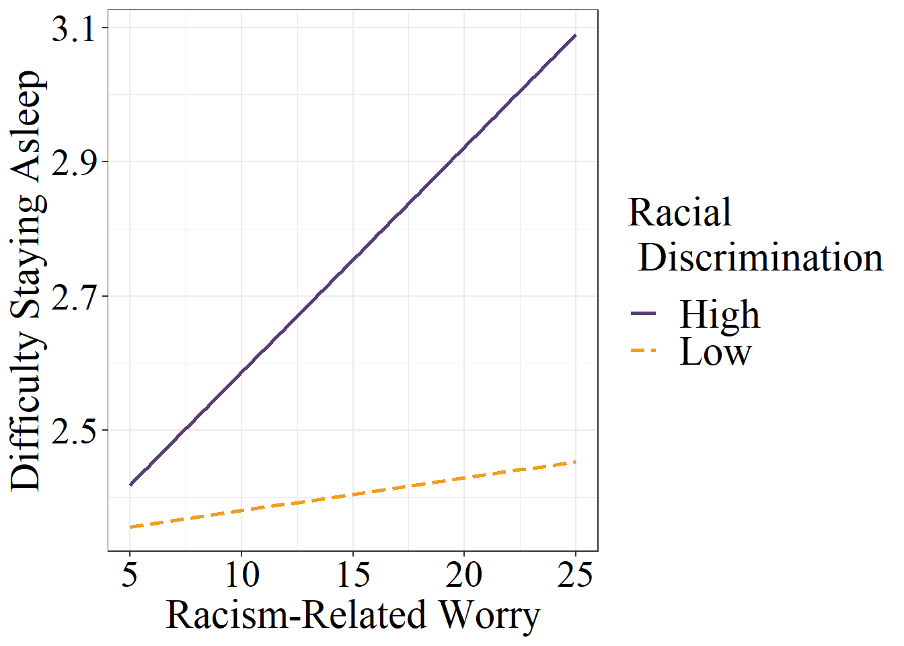

Interactive Effects of Racism-related Worry and Racial Discrimination on Sleep Disturbance among African American Women
Abstract
Anticipating racism intensifies the negative effect of racial discrimination on sleep disturbance
Sleep disturbance is an important predictor of racial health disparities with studies showing greater sleep disturbance among African Americans compared to Whites. Chronic racism-related stress has been linked with poor sleep, and may help explain racial disparities in sleep disturbance. Whereas most studies examine actual racism stress experiences, few have investigated the links between anticipatory racism-related stress and sleep. Anticipatory stress results in a heightened state of prolonged vigilance, potentiates the stress response, and has been proposed as a critical yet understudied component of racism-related stress. African American women have previously reported a pervasive sense of vigilance in anticipation of potential racism experiences. We examined the effect of racism-related worry (one domain of anticipatory racism stress) on difficulty staying asleep and interactive effects with racial discrimination among a nationally-representative sample of African American women aged 25-64 in the US (N=615). Racism-related worry is a 5-item scale indicating the degree to which African American women worry about their race and stereotypes (ùõº=.71). Racial discrimination was measured using the 8-item experiences of discrimination scale (ùõº=.91). Sleep disturbance was measured using a single item asking about difficulty staying asleep. All 3 measures were assessed on a 5-point scale with higher numbers indicating higher agreement on the construct of interest. We performed a weighted multivariable regression and found a significant positive interaction between racism-related worry and lifetime experiences of racial discrimination (b=0.004, SE=0.002, p=0.005). Among African American women with greater/higher/more racial discrimination experiences, racism-related worry increased the likelihood of sleep disturbance . Our findings affirm the need to consider anticipatory racism threat as an important aspect of racial stress and its implications for health.
contact: adpc@berkeley.edu
Tables
Demographic Table
| Term | N | % |
| Age (M, SD) | 50.39 | 10.81 |
| < HS Diploma | 180 | 29.27 |
| Not Employed | 244 | 2.14 |
| Not Married | 221 | 64.07 |
Exposures and Outcome
| Term | Mean | SD | Range |
| aRT Racism Related Worry | 13.31 | 4.22 | 5-25 |
| Experiences of Discrimination | 19.59 | 9.17 | 9-45 |
| Sleep Difficulty | 2.56 | 1.31 | 1-5 |
aRT
| Cognitive | Affective | Behavioral |
| Constant awareness of: stereotypes and judgments, meaning making, rumination, and anticipation of being stereotyped both in obvious and more ambiguous situations | Worry, fear of judgment & discriminatory treatment, concern about threats to one’s self-concept as well as threats to the group as a whole, and concern about confirming stereotypes about one’s group | Avoidance Behavior: Avoiding situations altogether and impression management |
| aRT Term | Example Item |
| aRT Racism Related Worry | I often think about whether or not people are making assumptions about me because I am Black |